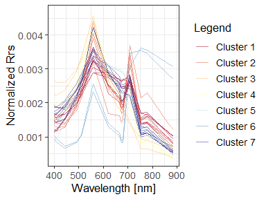
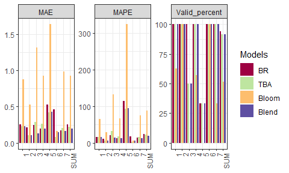

Author: Shun Bi
Date: 2021-02-24
Version: 0.11.1
E-mail: bishun1994@foxmail.com
Overview
FCMm is a package for fuzzy clustering water spectra (or called water color). Given that the most of water color spectra data sets are considered as the high dimensional set, the advantage of this method is making FCM assign the membership (sum as 1) harder, ensuring the desired water type are restricted to its belongings (not too soft). It is possible to cluster the harm algal bloom water type which can not be produced by FCM with m=2.
- If you want to cluster your own data sets, it provides an improved Fuzzy Cluster Method (FCM) by optimizing the fuzzifier value (default but not good being 2).
- You can also use the built-in cluster of inland waters produced by Bi et al. (2019) and can simply obtain the Chlorophyll-a concentration by blending three algorithms with relatively low bias.
- It supports raster (or called imagery) processing (see more details in help documents or vignettes).
- It includes several data sets about water color spectra and corresponding water quality parameters and a testing image raster (see help documents for details).
- Please see NEWS to get changes in each version.
Installation
The GitHub version requires the package devtools
# install it from GitHub quickly by `devtools` package
devtools::install_github('bishun945/FCMm')
# or use `remotes` package
remotes::install_github('bishun945/FCMm')
# install it and build vignettes
devtools::install_github('bishun945/FCMm', build_vignettes=TRUE)Usage
1. Classification of water spectra based on pre-defined cluster centers
This chunk introduces the usage of applying the FCMm package (and its built-in centrodis) to cluster water spectra. The details of obtaining the centrodis could be found in Bi et al. (2019). Also, run vignette("Builtin_centrodis") to see more about this application.
# Load testing data
library(FCMm)
library(ggplot2)
data("WaterSpec35")
data("Bi_clusters")
Rrs <- WaterSpec35[,3:17]
# Plot the spectra
plot_spec_from_df(Rrs) +
labs(x='Wavelength (nm)',y=expression(Rrs~(sr^-1))) +
theme_bw() +
theme(legend.position='none', text=element_text(size=13))
# Applying FCMm
result <- apply_FCM_m(Rrs=Rrs, option.plot=TRUE, do.stand=TRUE)
plot(result$p.group + theme(text=element_text(size=13)))
# plot(result$p.group+facet_wrap(~cluster, ncol=2))2. Algorithms blending via membership values from FCMm (version of Bi et al., 2019)
library(magrittr)
dt_Chla <- FCM_m_Chla_estimation(Rrs=data.frame(Rrs665=Rrs$`665`,
Rrs709=Rrs$`708.75`,
Rrs754=Rrs$`753.75`),
U=result$u)
dt_Chla$cluster <- result$cluster %>% as.character
dt_Chla$Chla_true <- WaterSpec35$Chla
# oldoptions <- options(scipen=1000)
subset(dt_Chla, select=c('cluster','Chla_true','BR','TBA','Bloom','conc.Blend')) %>%
reshape2::melt(., id=c('cluster','Chla_true')) %>%
ggplot(data=.) +
geom_point(aes(x=Chla_true,y=value,group=cluster,color=cluster),
alpha=0.8, size=4) +
scale_x_log10(limits=c(1,900)) +
scale_y_log10(limits=c(1,900)) +
scale_color_manual(values=RdYlBu(result$K)) +
labs(x='True value of Chla concentration (ug/L)',
y='Estimated value of Chla concentration (ug/L)',
color='Cluster') +
geom_abline(intercept=0, slope=1, linetype=2) +
facet_wrap(~variable, nrow=2) +
theme_bw() +
theme(axis.text.x.bottom = element_text(hjust=1),
strip.background = element_blank())
# on.exit(options(oldoptions))3. Assessment of Chla concentration algorithms
FCMm provides an useful function to assess the performance of algorithms, i.e., Assessment_via_cluster(). Users can decide to select the FCMm-supported error measures (metrics) by themselves (run cal.metrics.names() or cal.metrics.vector.names() to see what metrics could be used). A more detailed vignette is given to introduce the usage of the assessment work (run vignette("Assessment") to see more).
pred = dt_Chla[,c("BR","TBA","Bloom","conc.Blend")] %>%
setNames(., c("BR","TBA","Bloom","Blend"))
meas = dt_Chla[,"Chla_true"]
memb = dt_Chla[,paste0("M.", 1:7)] %>%
setNames(., 1:7)
Assess_soft <- Assessment_via_cluster(pred = pred,
meas = meas,
memb = memb,
metrics = c("MAE", "MAPE"),
log10 = TRUE,
total = TRUE,
hard.mode = FALSE,
cal.precision = FALSE,
na.process = TRUE,
plot.col = TRUE)
Assess_soft$res_plot_facet
| BR | TBA | Bloom | Blend | |
|---|---|---|---|---|
| 1 | 0.254 | 0.230 | 0.880 | 0.229 |
| 2 | 0.214 | 0.102 | 0.532 | 0.106 |
| 3 | 0.243 | 0.285 | 1.314 | 0.130 |
| 4 | 0.197 | 0.259 | 0.930 | 0.196 |
| 5 | 0.530 | 0.419 | 1.638 | 0.426 |
| 6 | 0.464 | 0.080 | 0.162 | 0.148 |
| 7 | 0.168 | 0.208 | 0.987 | 0.162 |
| SUM | 0.254 | 0.225 | 0.928 | 0.200 |
| BR | TBA | Bloom | Blend | |
|---|---|---|---|---|
| 1 | 16.64 | 15.45 | 64.46 | 15.32 |
| 2 | 10.64 | 5.40 | 28.65 | 5.54 |
| 3 | 20.24 | 32.92 | 131.42 | 14.26 |
| 4 | 12.57 | 18.34 | 66.03 | 12.53 |
| 5 | 114.32 | 92.40 | 323.21 | 94.13 |
| 6 | 17.42 | 3.01 | 6.10 | 5.57 |
| 7 | 13.83 | 16.76 | 75.27 | 13.08 |
| SUM | 23.96 | 22.39 | 88.10 | 20.03 |
4. Algorithms blending frameworks (updated in Feb 22, 2021)
data(WaterSpec35)
res_Jac17 = Blend_Jac17(WaterSpec35[, -c(1, 2)])
res_Moo14 = Blend_Moo14(WaterSpec35[, -c(1, 2)])
res_Bi21 = Blend_Bi21(WaterSpec35[, -c(1, 2)])
res_BiPHD = Blend_FCMm(WaterSpec35[, -c(1, 2)])
dt_compare <- data.frame(
Chla_true = WaterSpec35$Chla,
Jac17 = res_Jac17$Chla_blend,
Moo14 = res_Moo14$Chla_blend,
Bi21 = res_Bi21$Chla_blend,
BIPHD = res_BiPHD$Chla_blend,
BIPHD2 = res_BiPHD$Chla_reparam
) %>% reshape2::melt(., id = "Chla_true")
er_agg <- function(x) {
stats::aggregate(x, list(dt_compare$variable), mean)[, 2]
}
dt_compare$er1 <- dt_compare$Chla_true - dt_compare$value
dt_compare$er2 <- (dt_compare$Chla_true - dt_compare$value) / dt_compare$Chla_true * 100
er_df <- data.frame(
BIAS = er_agg(dt_compare$er1),
MAE = er_agg(abs(dt_compare$er1)),
MRPE = er_agg(dt_compare$er2),
MAPE = er_agg(abs(dt_compare$er2))
) %>% cbind(variable = levels(dt_compare$variable), .)
er_df$label <- sprintf("BIAS=%.3f\nMAE=%.3f\nMRPE=%.2f%%\nMAPE=%.2f%%",
er_df$BIAS, er_df$MAE, er_df$MRPE, er_df$MAPE)
ggplot(dt_compare) +
geom_point(aes(x = Chla_true, y = value, fill = variable),
size = 2.5, alpha = 0.8, color = "black",
shape = "circle filled") +
geom_abline(slope = 1, intercept = 0, linetype = 2) +
geom_text(inherit.aes = FALSE, data = er_df,
aes(x = min(dt_compare$Chla_true), y=max(dt_compare$Chla_true),
label = label), vjust = 1, hjust = 0) +
facet_wrap(~variable) +
labs(y="predictions") +
scale_x_log10() +
scale_y_log10()
Getting help
- About this package, I have written several vignettes to present the usage of
FCMm. Please read them carefully if you want to use this package for your research. Also, e-mail me viabishun1994@foxmail.comwithout hesitation if you have any questions or find any bug about it. - If you are more interested in the application of FCM-m about inland water spectra, I recommend you to read Bi et al. (2019) for more details.
- If you want to know some theoretical knowledge about FCM in mathematics, you could read some researches like Dembele et al. (2018).
- More about FCM in remote sensing applications, you can read Moore et al. (2014) and Jackson et al. (2017) which focus on Case-II and Case-I waters, respectively.
- See more details about optical water types of inland waters in Spyrakos et al. (2018)
- Hope you will enjoy using this package and have a nice day.
References
- Bi S, Li Y, Xu J, et al. Optical classification of inland waters based on an improved Fuzzy C-Means methodJ. Optics Express, 2019, 27(24): 34838-34856.
- Jackson T, Sathyendranath S, Mélin F. An improved optical classification scheme for the Ocean Colour Essential Climate Variable and its applicationsJ. Remote Sensing of Environment, 2017, 203: 152-161.
- Moore T S, Dowell M D, Bradt S, et al. An optical water type framework for selecting and blending retrievals from bio-optical algorithms in lakes and coastal watersJ. Remote sensing of environment, 2014, 143: 97-111.
- Spyrakos E, O’Donnell R, Hunter P D, et al. Optical types of inland and coastal watersJ. Limnology and Oceanography, 2018, 63(2): 846-870.
- Dembele D. Multi-objective optimization for clustering 3-way gene expression dataJ. Advances in Data Analysis and Classification, 2008, 2(3): 211-225.